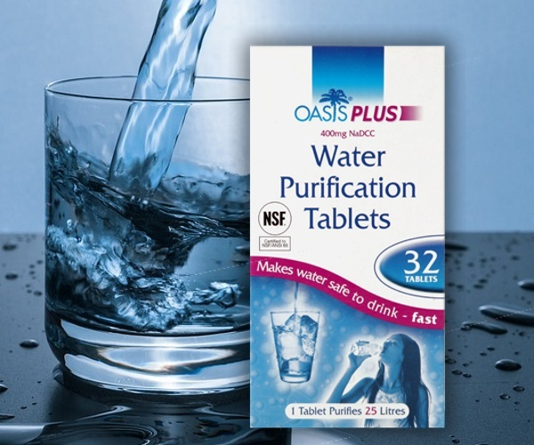

La purificación del agua es un proceso importante para hacer que el agua sea segura para beber. Aquí se describen algunos métodos básicos:
Uno de los métodos más simples y efectivos para purificar agua es hervirla. Sigue estos pasos:
Otra opción es utilizar tabletas purificadoras de agua. Estas tabletas contienen productos químicos que matan las bacterias y los virus presentes en el agua. Sigue las instrucciones del producto para usarlas correctamente.
El filtrado del agua es otro método para purificarla. Puedes utilizar filtros de agua de calidad diseñados para eliminar partículas y microorganismos dañinos. Asegúrate de seguir las instrucciones del fabricante y de cambiar los filtros regularmente.
La destilación es un proceso que implica hervir el agua para que se convierta en vapor y luego condensar ese vapor de nuevo en agua purificada. Este método es más complejo y se utiliza en situaciones específicas.
Recuerda que la calidad del agua cruda puede variar según la fuente, por lo que es importante estar seguro de la contaminación presente antes de elegir el método de purificación adecuado.
